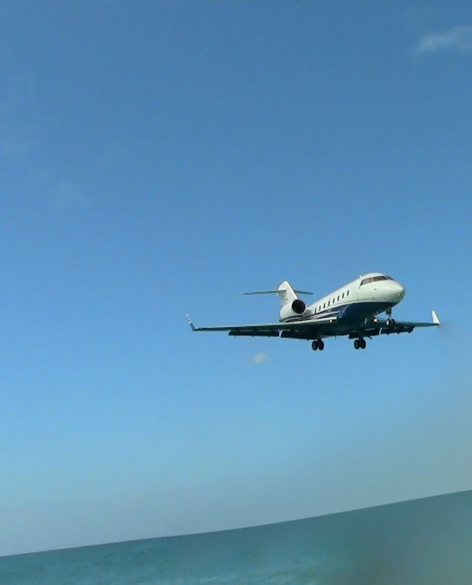
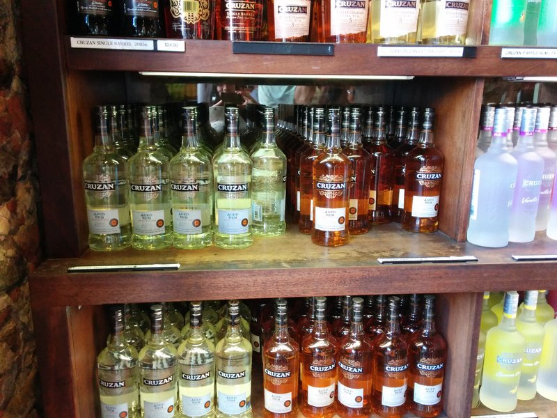
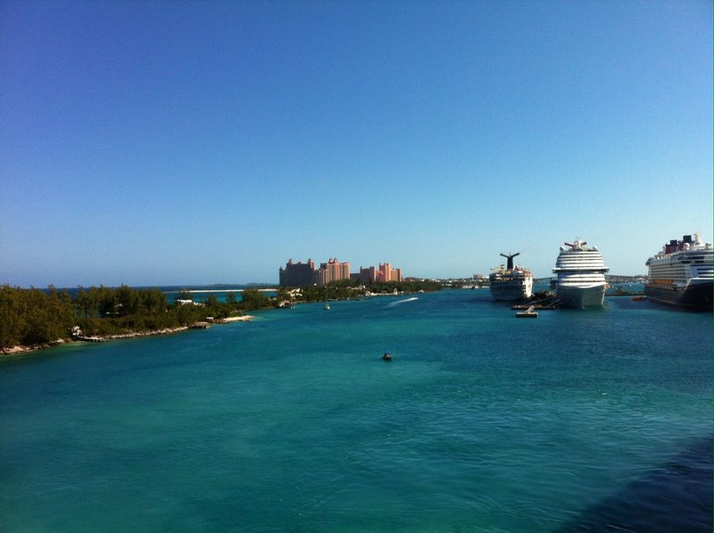
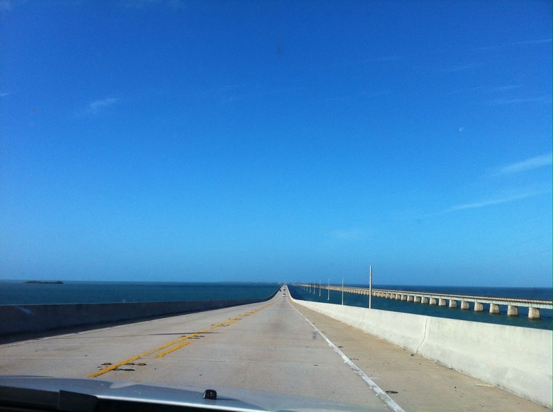
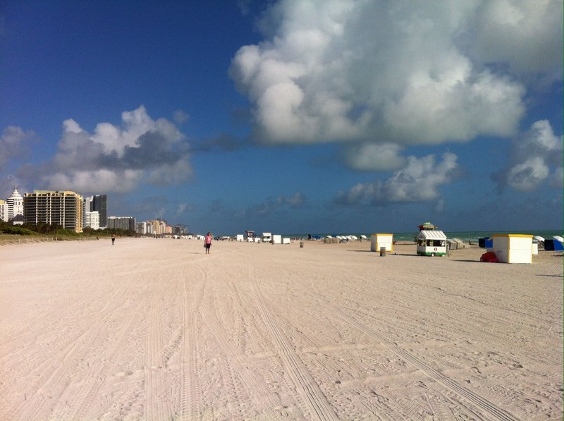
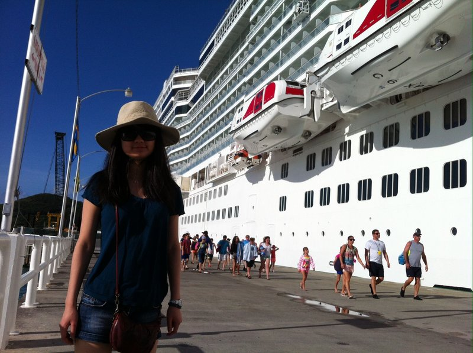

Christmas of 2013, I went on a cruise trip to the eastern caribbean, starting from Miami to st. Maarten, st. Thomas, Nassau, Key West, and then South Beach. I ws very lucky, because right before I left, toronto got the power outage and right after I left, there was a rain storm in the caribbean.
First off st. Maartin/Maarten, a place with both dutch and french, has the one-and-only Maho Beach right beside the Princess Juliana International Airport. Not only the wavy beach is steep and blue, the degree of closeness to the airport is, I would say, surprising. Seeing all those gigantic 747 airplane flying right above my head, I didn't even have time to power on my camera and have a close up shot at the airplane because it was already too close, and too late. If you have a one-day trip there, stay at Maho Beach. All day.

But, if you want to go shopping, or snorkelling, wait till st. Thomas. The Coral World Ocean Park is absolutely stunning. In contrast with the wavy noisy Maho, it is so calm and quiet, perfect for snorkelling. But instead of snorkelling I had a city tour climbing towards top of the mountain, standing on the balcony and had their famous banana rum. I would say their pina colada taste so much better than what I got in Miami. Then on the way back to the ship we walked along its famous Taphus harbor for rum shopping. I was surprised by how clean and pretty the streets are, and how cheap rum can be ($10 for a litre). Also their coconutty smoothie/rum/juice are really impressive.

Then it's the Bahamas. Nassau definitely gave me the best impression of their cruise harbor. There's this sense of luxury and beauty like no other Island. Along the way to the Atlantis are Michael Jordan, Shakira, and other rich-and-famous celebrities mantions. I first went snorkeling near the Aruba, WRONG DECISION. It was so windy that day makes it extremely hard to hold my head still in the ocean. Should've stay in Atlantis the whole time. Well. There's always next time.

We stayed at the Banana Bay on my way to Key West, but you know what, next time I'd better just stay in Key West. Key West is so much better than any Islands along the way. It is so bright and clean, but driving inside Key West is kind of a disaster. Streets are even smaller than those in downtown Montreal, and no parking spot whatsoever. However, driving 4 hrs to Key West is another unique experience.

South Beach, the best place to party. All restaurants along the beach road play hard core club music with huge cups of cocktail and discounted american food. The beach is so long and so big I was a little lost.

Finally, a little comment about my Norwegian Epic Cruise. Overall the cruise is better than what I heard from other people. Though it doesn't have the party atmosphere than other cruises, it is nice and clean. Their food is amazing -- we had lobster tail the first night it was delicious. Their shows are very entertaining too. Two things bugs me though. Most of the time if it's not 3 in the morning it is always too crowded. The ship design is a bit weird -- the seperated shower and washroom always makes me afraid that the water in the shower will overflow and soak the cabin completely. It never happened though.

Overall, nice trip. A little escape from the cold.